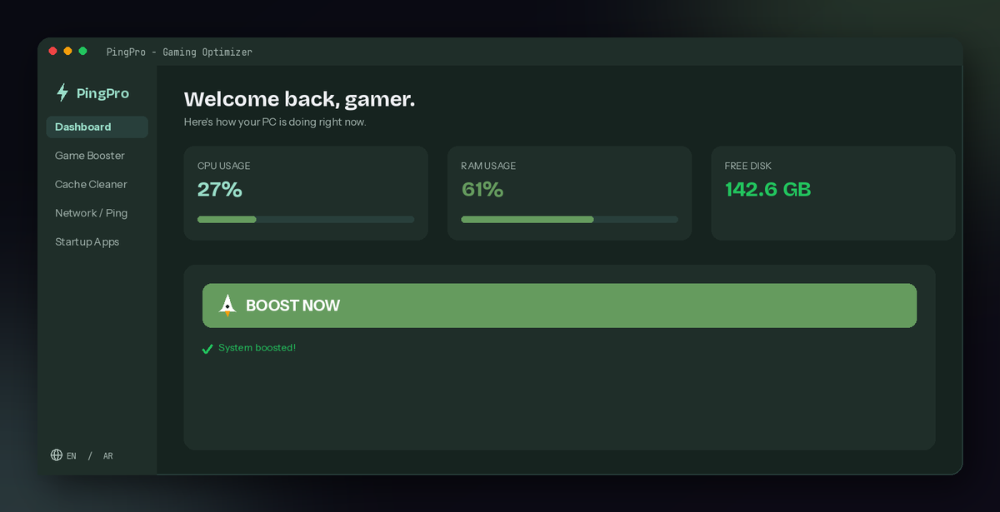
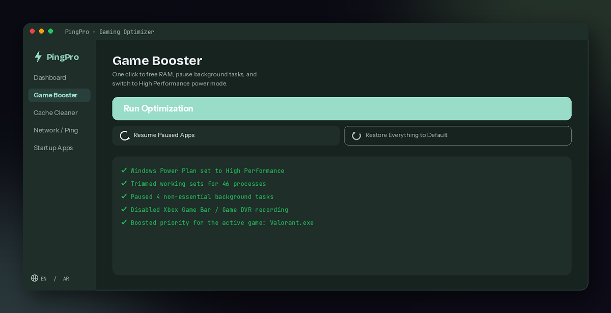
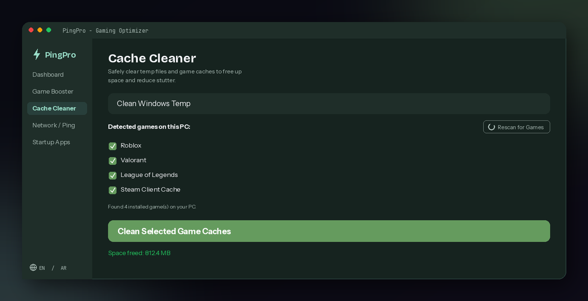

Boost your FPS.
Fix your ping.
Game without lag.
PingPro is a one-click Windows optimizer built for gamers — free up RAM, pause background apps, clean game caches, and switch DNS, all from one lightweight app.
$5 one-time payment — instant download — English & Arabic

Everything your PC needs before you queue up
Four tools, one app, zero technical knowledge required.
Free up your system in one click
Run Optimization trims memory, pauses resource-hungry background apps, switches Windows to High Performance mode, and boosts your active game's process priority.
- Frees RAM by trimming non-essential process memory
- Pauses apps like Discord, Spotify, and OneDrive — never closes them
- Switches your power plan to High Performance
- Resume Paused Apps and Restore Everything buttons undo it all instantly

Cleans the games you actually have installed
PingPro scans your PC and shows only the games it finds — no guessing, no cleaning folders that don't exist. Safe log and cache folders only, never save data.
- Auto-detects Roblox, Minecraft, Fortnite, Overwatch, Valorant, League of Legends, Genshin Impact
- Clears Windows Temp files too
- Never touches save files, settings, or configs
- Rescan anytime after installing a new game

Lower ping, faster boot
Test your latency and switch to Cloudflare or Google DNS in one click. The Startup Apps Manager shows what launches with Windows so you can turn off the extras slowing down your boot.
- One-click DNS switch to Cloudflare (1.1.1.1) or Google (8.8.8.8)
- Restore Automatic DNS whenever you want
- See and toggle every app set to launch with Windows
- Changes only affect your own Windows account, never system-wide
Built to never break your PC
Every feature is designed around one rule: nothing PingPro does should ever cost you data or stability.
Apps are paused, not closed
Background apps get suspended, not killed. Nothing you were running gets lost, and Resume brings everything back in one click.
Only known-safe cache folders
Cache cleaning targets log and cache folders only — save files, configs, and progress are never touched.
Your account only
Startup and registry changes are scoped to your own Windows user, never system-wide settings.
Errors never crash the app
Every system action is wrapped in error handling, so a locked file or missing folder just gets skipped, not a crash.
One-click undo
Restore Everything reverts the power plan, DNS, and paused apps back to normal in a single click.
No ads, no bloat
PingPro does exactly what it says. No tracking, no upsells, no background telemetry.
See it in action
The actual PingPro interface — dark mode, bilingual, built for gamers.
Questions before you buy
Everything you'd want to know before installing.
Yes. Every action PingPro takes is reversible: background apps are paused rather than closed, cache cleaning only touches known log and cache folders, and startup changes only affect your own Windows user account.
Most features work without it. Switching DNS and the power plan need Administrator rights — PingPro will tell you clearly if a feature needs to be run as admin.
PingPro automatically scans your PC and detects installed games including Roblox, Minecraft, Fortnite, Overwatch, Valorant, League of Legends, and Genshin Impact, plus Steam's own client cache.
Payhip delivers your license key automatically to your email right after checkout, along with your download link. You enter it once when you first open PingPro.
Yes, the whole interface switches instantly between English and Arabic from a single button in the sidebar.